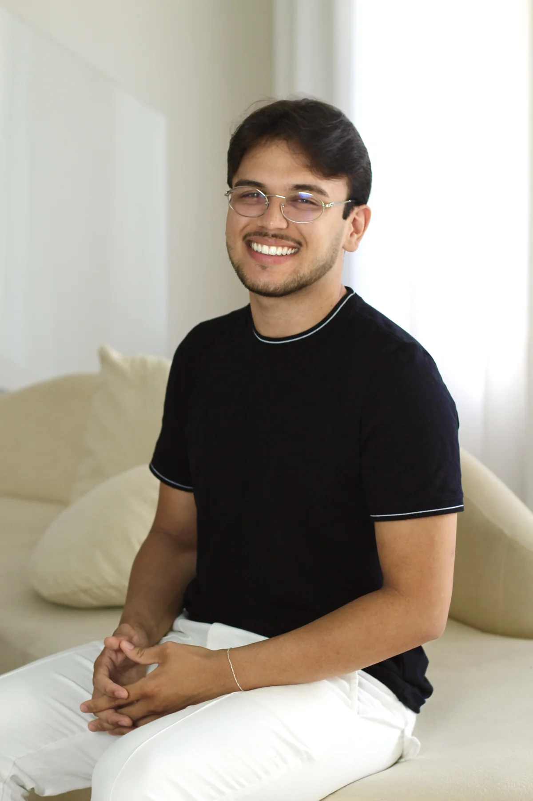
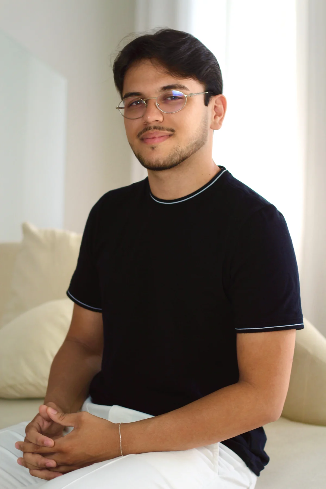

01
Liberação
miofascial
Cuidado direcionado às tensões e ao desconforto muscular na rotina de atividade física, com atenção às regiões mais exigidas no seu treino.
MASSOTERAPIA ESPORTIVA
Na academia, no CrossFit ou no seu esporte: cuidado muscular voltado às demandas de quem se movimenta. Atendimento individualizado para atletas e para quem faz da atividade física parte da vida.

Seu treino tem ritmo. Seu cuidado também.
↓Do primeiro treino à rotina de atleta.
O cuidado acompanha você.
CUIDADO PARA QUEM TREINA
A modalidade, a frequência dos treinos e os desconfortos que você percebe orientam a conversa antes de cada atendimento.
Cuidado direcionado às tensões e ao desconforto muscular na rotina de atividade física, com atenção às regiões mais exigidas no seu treino.
Uma opção de cuidado corporal com técnicas manuais suaves, botas pneumáticas e termoterapia, conforme a avaliação das suas necessidades.
POR DENTRO DO ATENDIMENTO
Veja um pouco do atendimento com David e conheça de perto o trabalho de cuidado corporal. Um espaço para conversar sobre sua rotina de atividade física e receber atenção individualizada.
Conversar sobre meu treino ↗
SOBRE DAVID
Meu trabalho com massoterapia esportiva começa entendendo como você se movimenta: o que pratica, com que frequência treina e quais regiões pedem atenção. Essa conversa orienta o cuidado em cada sessão.
Você não precisa competir para cuidar do corpo. Seja por desempenho, por prazer ou por qualidade de vida, sua rotina merece um atendimento com escuta, respeito aos seus limites e atenção às suas necessidades.
INVESTIMENTO
RECOVERY · CUIDADO ENTRE TREINOS
Um momento dedicado a você e às demandas da sua rotina esportiva. O Recovery reúne cuidado muscular e recursos voltados à recuperação em um atendimento acolhedor, com atenção ao que seu corpo precisa entre os treinos.
Seu esforço merece
um momento de cuidado.
“O cuidado com o corpo
também faz parte do treino.”
VAMOS CONVERSAR
Escolha o atendimento e fale com David pelo WhatsApp. Na conversa, conte sobre seu treino e o cuidado que procura.